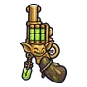

หมู่บ้านคนเก็บพิษ
ดูบนแผนที่และวิธีไป วางแผนฟาร์ม
ชั้นล่างในแดนใต้สีแดง · Lv 56–66
ชั้นล่าง / ดันเจี้ยน
มอนในแมพ (8)
| มอน | Lv | ธาตุ | โซน |
|---|---|---|---|
| 56–62 | พิษ | ||
| 64–66 | พิษ | ลานต้มพิษ | |
| 56–64 | พิษ | ลานต้มพิษ | |
| 58–66 | พิษ | ||
| 58–66 | อมตะ | ลานต้มพิษ | |
| 58–66 | พิษ | ||
| 58–66 | พิษ | ||
| 68–68 | พิษ |
อุปกรณ์ที่ดรอปในแมพนี้
| ของ | โอกาสสูงสุด |
|---|---|
| 0.5% | |
| 0.25% | |
| 0.25% | |
| 0.25% | |
| 0.25% | |
| 0.25% | |
 ปืนพกคู่ขวดพิษ | 0.24% |
| 0.12% | |
| 0.12% | |
| 0.12% | |
| 0.12% | |
| 0.12% | |
| 0.12% | |
| 0.12% | |
| 0.12% |